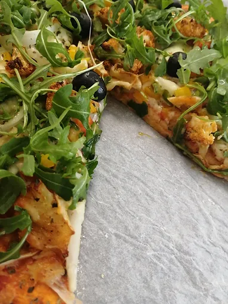

Massa de Pizza Fofa, Fácil e Rápida de Preparar sem ter que Levedar
Tempo de preparação
15min
Horas de Cozimento
20min
Tempo Total
35min
Porções
4/5

Ingredientes
- 2 csp de azeite
- 120ml de água
- 260g de farinha de trigo
- ½ cchá de açúcar
- 2 cchá de fermento em pó
- 1 cchá de sal
Instruções
- Pré aqueça o forno a 220ºC. Coloque o tabuleiro que vai levar a pizza a cozer dentro do forno para este também ficar pré-aquecido.
- Num recipiente pequeno, misture a água com o azeite e reserve.
- Numa bacia grande misture a farinha, o sal, o açúcar e o fermento e misture os secos muito bem com uma varinha de arames.
- Adicione a mistura de água e azeite e misture os ingredientes todos com uma colher de pau.

- Use as mãos para trabalhar a massa (coloque um pouco de azeite nas mãos para a massa não pegar) e quando deixar de colar às laterais da bacia, transfira para uma base enfarinhada. Não trabalhe demasiado a massa senão ela pode ficar dura!
- Na base enfarinhada, com a ajuda de um rolo comece a dar forma á pizza. Quando achar que está do tamanho e espessura perfeita transfira para o tabuleiro pré-aquecido (tenha cuidado para não se queimar) com uma folha de papel vegetal para não pegar ao tabuleiro.
- Preencha a pizza como mais gostar! Eu fiz a minha com bastante polpa de tomate, queijo ralado, orégãos, tomilho, cebola, uma mistura de pimentos, courgette, beringela, um fio de azeite, um pouco de sal, pimenta preta, couve flor previamente assada no forno, mais queijo por cima para ligar os ingredientes todos e finalizei com azeitonas pretas.
- Levei ao forno por cerca de 15 a 17 minutos ou até a massa estar dourada. Tirei do forno, deixei esfriar por uns minutos e finalizei com folhas de rúcula frescas!